目次 > ゲームについて > 日本Falcom 攻略 > ZWEI II > ダンジョン一覧 > 妖魔の里 (LV.13)
らんの眼
ZWEI II (ツヴァイ 2、ZWEI II Plus)
| 概要 | 情報 | 攻略チャート |
| フード交換 | ペットについて | ボス戦 |
| 敵キャラ一覧 | ハンターランク | G-コロッセオ |
| アイテム一覧 | ガジェット一覧 | トレジャー一覧 |
| ダンジョン一覧 | クリアデータ特典 | Plusの追加要素 |
| ZWEI II攻略へ | 目次へ戻る |
| 第1 階層 |
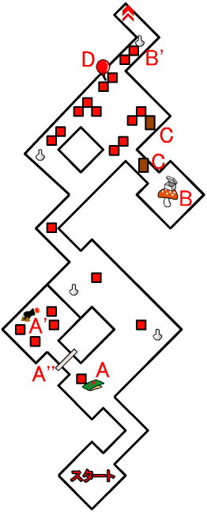
| 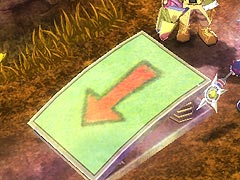 | A 地点にある立て札を読むと、突然ジャンプ台が足下に出現し、A' 地点に飛ばされてしまいます。 |
| 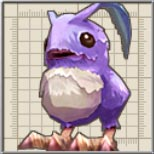 | A'' 地点の扉を開くには、A' 地点にいる「こうていもさもさ」を倒さなければなりません。 |
| 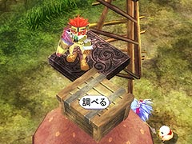 | B 地点のキノコを、B' 地点まで動かし、足場に乗ることで、キノコの上にある宝箱を開けることができます。 |
| 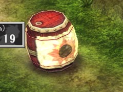 | C 地点にあるタルは、破壊すると点火した爆弾が出てくるので注意してください。 |
| 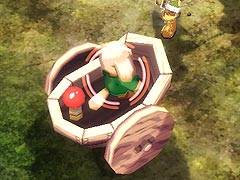 | D 地点は風船を付けた「ちゃりおっつ」に乗った「もりこぼると」がいます。風船を割れば、アイテムが出てきますが、普通に攻撃を加えると、風船が割れる前に「ちゃりおっつ」を倒してしまい、風船が消えてしまいます。しかし、アルウェンの「凍結の魔法」で「ちゃりおっつ」を凍らせてから、「凍結の魔法」で攻撃すれば、「ちゃりおっつ」を倒すことなく風船を割ることができます。 |
| 第2 階層 |
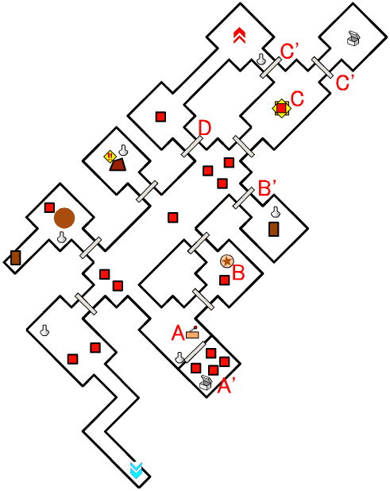
| 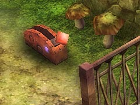 | A 地点のレバーを動かすと、A' 地点の扉が開きます。 また、A 地点のレバーは、A' 地点の壁越しからも動かすことができます。 |
| 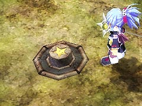 | B 地点のスイッチを押すと、B' 地点の扉が開きます。 |
| 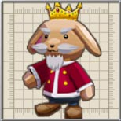 | C 地点で移動すると、中ボスの「こぼるときんぐ」が出現します。 「こぼるときんぐ」を倒すと、C' 地点の扉が開きます。 |
| 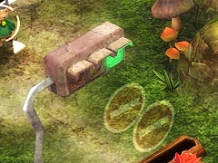 | D 地点の扉は、側にある信号が青(緑)になると開き、赤の場合は閉じます。 |
| 第3 階層 |
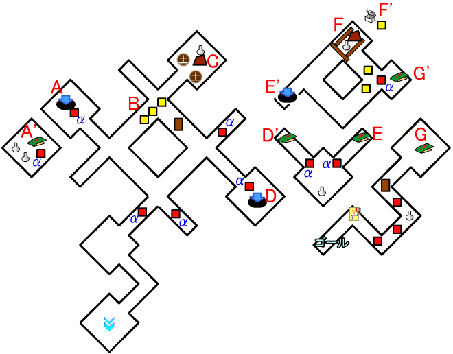
| 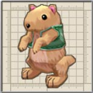 | αと書いてある敵は、「もりおこじょ」です。 かまいたちに注意してください。 |
| 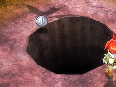 | A 地点の穴に落ちると、A' 地点へ移動できます。 A 地点に戻るには、A' 地点にあるジャンプ台を使ってください。 |
| 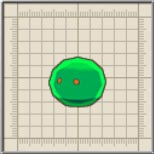 | B 地点へ移動すると、敵が複数出現するので注意してください。 |
| 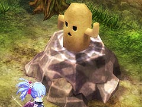 | C 地点に置かれた巨大なハニワは、壊すべき対象にカウントされているので、プラチナメダルを狙う場合は必ず壊してください。 ただし、壊すと中から点火された爆弾がたくさん出てくるので、注意しましょう。 |
| D 地点の穴に落ちると、D' 地点へ移動できます。ただし、落下地点に「もりおこじょ」がいるので、不意打ちには十分注意してください。 それと、D 地点に戻るには、D' 地点のジャンプ台を使ってください。 |
|
| E 地点のジャンプ台を使うことで、E' 地点へ移動できます。 E 地点に戻るには、E' 地点にある穴に落ちてください。 |
|
| 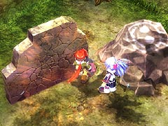 | F 地点には前方後円墳があります。前方後円墳の岩を「爆弾」で壊すと、「ぞんび」が出現します。 また、岩を壊した後で、岩のあった位置を調べると、宝箱が出てきます。 |
| G 地点とG' 地点の行き来には、それぞれの地点にあるジャンプ台を利用します。 |
| 概要 | 情報 | 攻略チャート |
| フード交換 | ペットについて | ボス戦 |
| 敵キャラ一覧 | ハンターランク | G-コロッセオ |
| アイテム一覧 | ガジェット一覧 | トレジャー一覧 |
| ダンジョン一覧 | クリアデータ特典 | Plusの追加要素 |
| ページの上部へ | ZWEI II 攻略へ | 目次へ戻る |